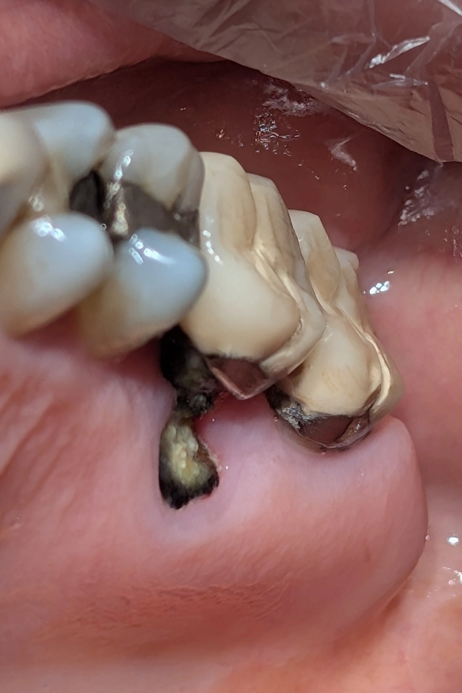

Chairside 18
وقتی یک یافتهی مبهم، دو احتمال رقیب میسازد

بیمار با ناحیهای خلفی مراجعه کرد که یافتهاش غیرعادی بود: یک دندانِ کراوندار، و در سمت پالاتالِ آن، یک ریشهی تیره و پوسیده که بیرون از محدودهی روکش قرار داشت و ظاهرش شبیه یک ریشهی پالاتال بود، ولی جدا از روکش.
وسوسهی اول این بود که سریع یک روایت ساخته شود: شاید درمانگر اولیه محدودهی دندان را اشتباه تشخیص داده، مارجین کراون را غلط تعیین کرده، و بهمرور پوسیدگی ناحیهی فورکا را خورده تا جایی که آن ریشه جدا شده و حرکت کرده است. این روایت با خودش سازگار است و با آسیبپذیری شناختهشدهی فورکای مولرهای بالا در برابر پوسیدگی سابمارجینال هم میخواند.
اما همینجا باید مکث کرد. «حرکت ریشه» یک ادعای مکانیکی است، نه یک مشاهده. ریشهای که حمایت پریودنتالش را از دست داده میتواند طی هفتهها تا ماهها جابهجا شود — ولی این فقط وقتی ثابت میشود که موقعیت فعلی ریشه را با جای آناتومیک خودش مقایسه کنیم. بدون آن مقایسه، نمیتوان با اطمینان گفت ریشه واقعاً حرکت کرده است.
احتمال دوم این است که این ساختار اصلاً جزو دندانِ کراوندار نبوده باشد. یک دندان اضافه (supernumerary) در ناحیهی خلفی، خارج از قوس، بینقش در اکلوژن و دور از دسترس بهداشت، میتواند سالها دستنخورده بماند تا بالاخره بپوسد. در این صورت درمانگر اولیه شاید اصلاً مارجین را غلط نزده باشد؛ شاید از همان ابتدا با دو دندان مجزا روبهرو بوده و کراون را درست روی دندان اصلی نشانده است.
نکتهی کلیدی این است که این دو روایت را با دادهی موجود نمیتوان از هم تفکیک کرد — اما یک معیار رادیوگرافیک واحد میتواند هر دو را همزمان تست کند: شمارش و استقلال ریشهها. اگر PA یا CBCT نشان دهد دندانِ کراوندار مجموعهی ریشهای کامل و مستقل خودش را دارد و این ساختار هیچ ارتباط آناتومیکی با آن ندارد، فرضیهی دندان اضافه اثبات میشود. و اگر نشان دهد این ریشه در امتداد فورکای همان دندان است، روایت مارجین اشتباه تأیید و دندان اضافه کنار گذاشته میشود.
️گاهی ارزش یک کیس در تشخیص قطعیاش نیست، بلکه در صداقت دربارهی چیزی است که هنوز نمیدانیم.
تمایل اولیه در این کیس به سمت مارجین اشتباه بود — ولی تمایل، تشخیص نیست. در لحظهی ویزیت رادیوگرافی در دست نبود، و همین یعنی هر روایتی که انتخاب میشد، یک حدسِ آراسته باقی میماند، نه یک قضاوت مستند.
️شاید مهارتی که کمتر دربارهاش حرف میزنیم همین باشد: نگهداشتن دو احتمال بهصورت همزمان، تا وقتی دادهی لازم برای حذف یکیشان فراهم شود.
محتوای این صفحه برای استفادهٔ آموزشی دندانپزشکان و دانشجویان دندانپزشکی تهیه شده است.